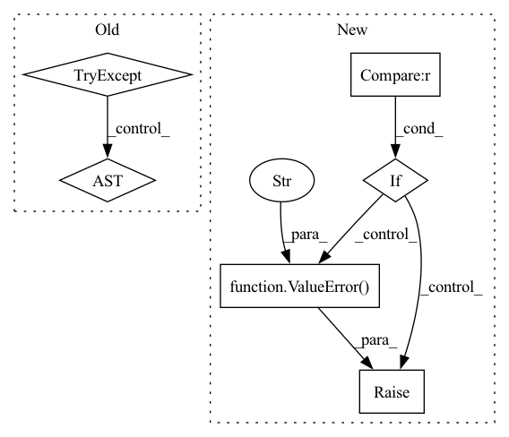

Pattern ID :17493
Before Change
// Rename the columns according to their appliances
columns = []
for col in df.columns:
try:
app = metergroup.get_labels([col[0]])[0]
except Exception:
try:
with HiddenPrints():
app = metergroup.get_labels([col[0][0][0]])[0].lower()After Change
// If the meter is on its own, its current column name is:
// col = ElecMeterID(instance, building, dataset)
instance = col[0]
elif type(col) is MeterGroupID :
// If the meter is grouped with others, its current column name is:
// MeterGroup(meters=(ElecMeterID(instance, building, dataset)))
instance = col[0][0][0]
else:
raise ValueError(f"Unexpected type of meter ID for"{col}" "
f"column:\n {type(col)}" )
// We use its instance to get the appliance label
with HiddenPrints():
labels = metergroup.get_labels([instance])
app = homogenize_string(labels[0])In pattern: SUPERPATTERN
Frequency: 4
Non-data size: 6
Instances Fragment ID: 57952054
Project Name: uca-datalab/nilm-thresholding
Commit Name: 04e506f9b6ce735c435ad13686a1a44f9ee36c7a
Time: 2020-05-04
Author: danipg1409@gmail.com
File Name: better_nilm/nilmtk/metergroup_utils.py
M Class Name: AnonimousClass
N Class Name: AnonimousClass
M Method Name: df_from_sections(3)
N Method Name: df_from_sections(3)
M Parent Class:
N Parent Class:
M File Name: better_nilm/nilmtk/metergroup_utils.py
N File Name: better_nilm/nilmtk/metergroup_utils.py
M Start Line: 168
M End Line: 178
N Start Line: 174
N End Line: 189
Before Change
def check_is_priority(config: dict, resource_pool: str) -> bool:
try:
for pool in config["resource_pools"]:
if pool["pool_name"] == resource_pool and pool["scheduler"]["type"] != "priority":
return False
return is_priority_rm(config)
except (KeyError, TypeError):
return is_priority_rm(config)
return True
After Change
def check_is_priority(pools: bindings.v1GetResourcePoolsResponse, resource_pool: str) -> bool:
if pools.resourcePools is None :
raise ValueError(f"No resource pools found checking scheduler type of {resource_pool}" )
for pool in pools.resourcePools:
if (resource_pool is None and pool.defaultComputePool) or resource_pool == pool.name:
return pool.schedulerType == bindings.v1SchedulerType.SCHEDULER_TYPE_PRIORITY Fragment ID: 57952038
Project Name: determined-ai/determined
Commit Name: 27e04e4d8ebc2d93c7e2a1ef7e7f306f259e7983
Time: 2022-05-17
Author: 31451191+NicholasBlaskey@users.noreply.github.com
File Name: harness/determined/cli/job.py
M Class Name: AnonimousClass
N Class Name: AnonimousClass
M Method Name: check_is_priority(2)
N Method Name: check_is_priority(2)
M Parent Class:
N Parent Class:
M File Name: harness/determined/cli/job.py
N File Name: harness/determined/cli/job.py
M Start Line: 128
M End Line: 136
N Start Line: 120
N End Line: 126
Before Change
if sharded:
raise ValueError("sharded is not supported for AutoModel")
try:
return CausalLM(model_id, revision, quantize=quantize)
except Exception:
return Seq2SeqLM(model_id, revision, quantize=quantize)
After Change
if sharded:
raise ValueError("sharded is not supported for AutoModel")
if model_type in modeling_auto.MODEL_FOR_CAUSAL_LM_MAPPING_NAMES :
return CausalLM(model_id, revision, quantize=quantize)
if model_type in modeling_auto.MODEL_FOR_SEQ_TO_SEQ_CAUSAL_LM_MAPPING_NAMES:
return Seq2SeqLM(model_id, revision, quantize=quantize)
raise ValueError(f"Unsupported model type {model_type}" )
Fragment ID: 57952028
Project Name: huggingface/text-generation-inference
Commit Name: 462530c2b05013e0822fd3d9e38fb08adc0a84b6
Time: 2023-03-27
Author: nickhill@us.ibm.com
File Name: server/text_generation_server/models/__init__.py
M Class Name: AnonimousClass
N Class Name: AnonimousClass
M Method Name: get_model(4)
N Method Name: get_model(4)
M Parent Class:
N Parent Class:
M File Name: server/text_generation_server/models/__init__.py
N File Name: server/text_generation_server/models/__init__.py
M Start Line: 67
M End Line: 94
N Start Line: 68
N End Line: 99
Before Change
)
x_train, y_train = df_train["feature"], df_train["label"]
x_valid, y_valid = df_valid["feature"], df_valid["label"]
try:
wdf_train, wdf_valid = dataset.prepare(["train", "valid"], col_set=["weight"], data_key=DataHandlerLP.DK_L)
w_train, w_valid = wdf_train["weight"], wdf_valid["weight"]
except KeyError as e:
w_train = pd.DataFrame(np.ones_like(y_train.values), index=y_train.index)
w_valid = pd.DataFrame(np.ones_like(y_valid.values), index=y_valid.index)
After Change
x_train, y_train = df_train["feature"], df_train["label"]
x_valid, y_valid = df_valid["feature"], df_valid["label"]
if reweighter is None :
w_train = pd.DataFrame(np.ones_like(y_train.values), index=y_train.index)
w_valid = pd.DataFrame(np.ones_like(y_valid.values), index=y_valid.index)
elif isinstance(reweighter, Reweighter):
w_train = pd.DataFrame(reweighter.reweight(df_train))
w_valid = pd.DataFrame(reweighter.reweight(df_valid))
else:
raise ValueError("Unsupported reweighter type." )
save_path = get_or_create_path(save_path)
stop_steps = 0
train_loss = 0 Fragment ID: 57952030
Project Name: microsoft/qlib
Commit Name: cf35562e8458bc10fc0760e6c30c560c4eb10734
Time: 2022-01-10
Author: you-n-g@users.noreply.github.com
File Name: qlib/contrib/model/pytorch_nn.py
M Class Name: DNNModelPytorch
N Class Name: DNNModelPytorch
M Method Name: fit(6)
N Method Name: fit(5)
M Parent Class: Model
N Parent Class: Model
M File Name: qlib/contrib/model/pytorch_nn.py
N File Name: qlib/contrib/model/pytorch_nn.py
M Start Line: 175
M End Line: 182
N Start Line: 170
N End Line: 187